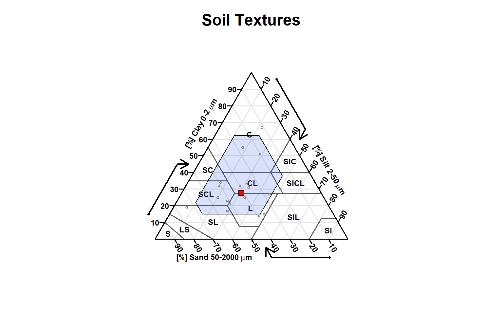
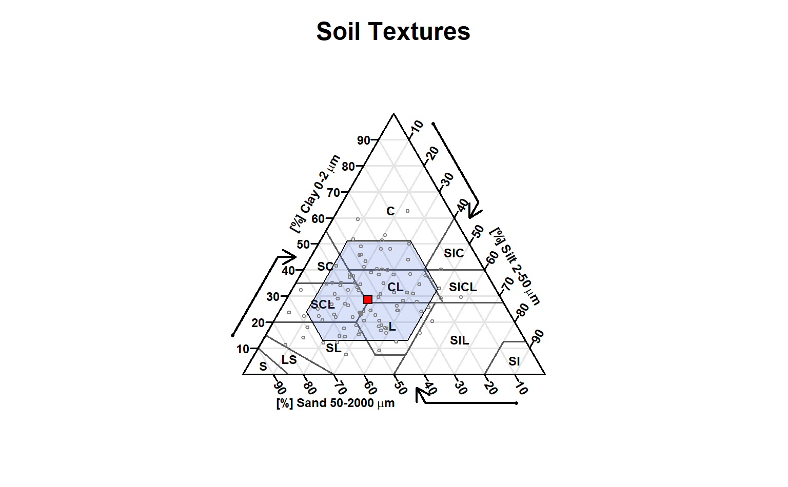

R/textureTriangleSummary.R
textureTriangleSummary.RdThis function accepts soil texture components (sand, silt, and clay percentages) and plots a soil texture triangle with a "representative value" (point) and low-high region (polygon) defined by quantiles (estimated with Hmisc::hdquantile). Marginal quantiles of sand, silt, and clay are used to define the boundary of a low-high region. The default settings place the RV symbol at the texture defined by marginal medians of sand, silt, and clay. The default low-high region is defined by the 5th and 95th marginal percentiles of sand, silt, and clay.
textureTriangleSummary( ssc, p = c(0.05, 0.5, 0.95), delta = 1, rv.col = "red", range.border = "black", range.col = "RoyalBlue", range.alpha = 80, range.lty = 1, range.lwd = 2, main = "Soil Textures", legend.cex = 0.75, legend = TRUE, ... )
| ssc |
|
|---|---|
| p | vector of percentiles (length = 3) defining 'low', 'representative value', and 'high' |
| delta | grid size used to form low-high region |
| rv.col | color used for representative value (RV) symbol |
| range.border | color used for polygon border enclosing the low-high region |
| range.col | color used for polygon enclosing the low-high region |
| range.alpha | transparency of the low-high range polygon (0-255) |
| range.lty | line style for polygon enclosing the low-high region |
| range.lwd | line weight polygon enclosing the low-high region |
| main | plot title |
| legend.cex | scaling factor for legend |
| legend | logical, enable/disable automatic legend |
| ... | further arguments passed to |
an invisible matrix with marginal percentiles of sand, silt, and clay
D.E. Beaudette, J. Nemecek, K. Godsey
# \donttest{ if( requireNamespace("Hmisc") & requireNamespace("compositions") & requireNamespace("soiltexture") ) { # sample data data('sp4') # subset rows / columns ssc <- sp4[grep('^Bt', sp4$name), c('sand', 'silt', 'clay')] names(ssc) <- toupper(names(ssc)) # make figure, marginal percentiles are silently returned stats <- textureTriangleSummary( ssc, pch = 1, cex = 0.5, range.alpha = 50, range.lwd = 1, col = grey(0.5), legend = FALSE ) # check stats # simulate some data and try again s <- bootstrapSoilTexture(ssc, n = 100)$samples # make the figure, ignore results textureTriangleSummary( s, pch = 1, cex = 0.5, range.alpha = 50, range.lwd = 1, col = grey(0.5), legend = FALSE ) }#># }